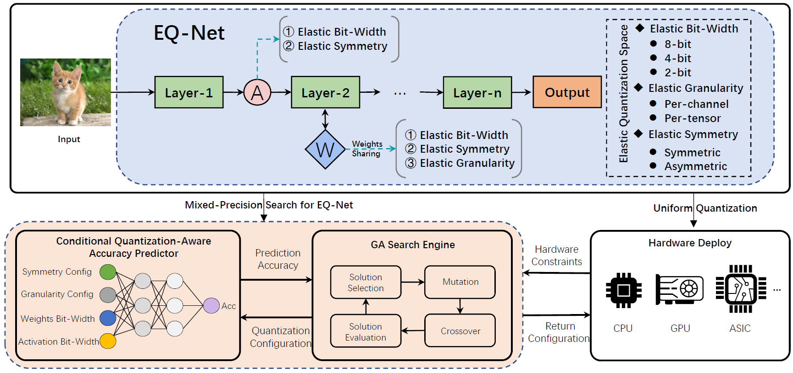
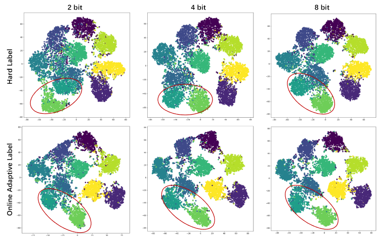
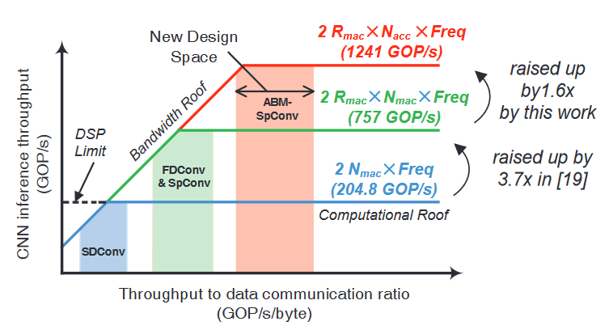
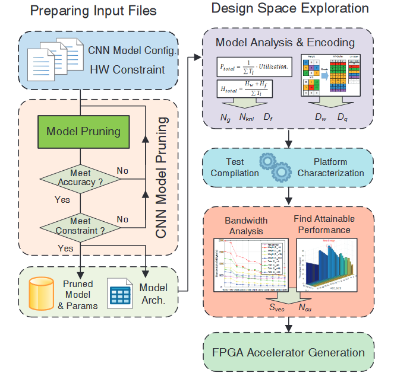
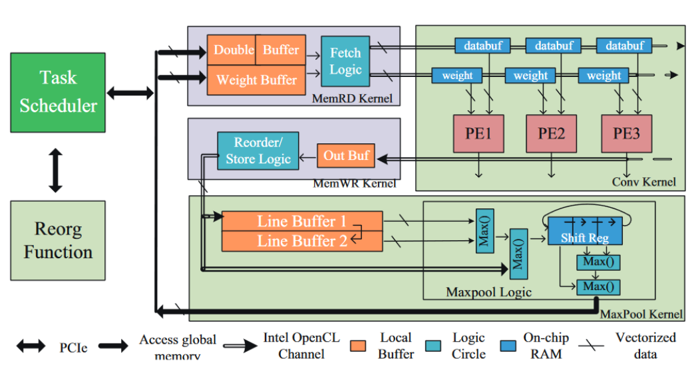
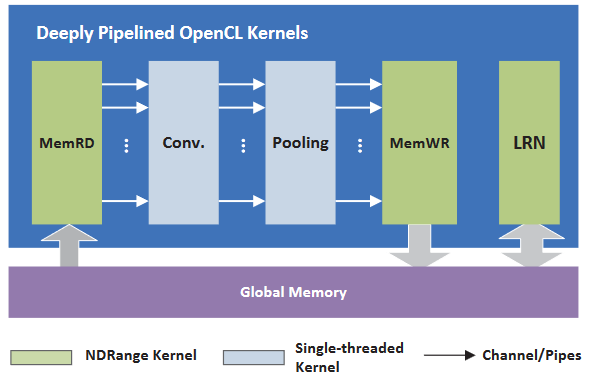

|
Ke Xu 许柯
I am a Lecturer with the School of Artificial Intelligence, Anhui University, Hefei, China. I received my Ph.D. degree in the Institute of Information Science, Beijing Jiaotong University (BJTU), China, 2021.
Email: xuke@ahu.edu.cn
Google Scholar /
Github /
|
|
|
Research
My research interests are computer vision, machine learning. Specifically, I am interested in using deep learning to solve the practical problems in the industry such as the limitation of insufficient resources and a trade-off between computation and accuracy. My research focus is mainly on:
Neural architecture design and search
Network quantization
Network pruning
Knowledge distillation
AI embedded system
FPGA accelerator design of DNN
|
| Recent News
🚩 [2023.12] One paper is accepted by AAAI 2024.
🚩 [2023.07] One paper is accepted by ICCV 2023.
🚩 [2022.04] One paper is accepted by IJCAI 2022.
|
 |
PTMQ: Post-Training Multi-Bit Quantization of Neural Networks
[PDF]
Ke Xu, Zhongcheng Li, Shanshan Wang, Xingyi Zhang
Thirty-Eighth AAAI Conference on Artificial Intelligence (AAAI), 2024
Paper /
Project /
Code
|
|  |
EQ-Net: Elastic Quantization Neural Networks
[PDF]
Ke Xu, Lei Han, Ye Tian, Shangshang Yang, Xingyi Zhang
International Conference on Computer Vision (ICCV), 2023
Paper /
Project /
Code
|
|  |
MultiQuant: Training Once for Multi-bit Quantization of Neural Networks
[PDF]
Ke Xu, Qiantai Feng, Xingyi Zhang, Dong Wang.
International Joint Conference on Artificial Intelligence (IJCAI), 2022
Paper
|
|  |
DSP-Efficient Hardware Acceleration of Convolutional Neural Network Inference on FPGAs
[PDF]
Dong Wang, Ke Xu, Jingning Guo, Soheil Ghiasi
IEEE Transactions on Computer-Aided Design of Integrated Circuits and Systems(TCAD), 2020
Paper
|
|  |
ABM-SpConv: A Novel Approach to FPGA-based Acceleration of Convolutional Neural Network Inference
[PDF]
Dong Wang, Ke Xu, Qun Jia, Soheil Ghiasi
Design Automation Conference (DAC), 2019
Paper
This work presented the first high-throughput FPGA accelerator design which targeted efficient implementation of sparse convolutional neural network.
|
|  |
A Scalable OpenCL-Based FPGA Accelerator for YOLOv2
[PDF]
Ke Xu,Xiaoyun Wang, Dong Wang*
Field-Programmable Custom Computing Machines (FCCM), 2019
Paper /
Journal /
Code
|
|  |
PipeCNN: An OpenCL-Based Open-Source FPGA Accelerator for Convolution Neural Networks
[PDF]
Dong Wang, Ke Xu*, Diankun Jiang
International Conference on Field Programmable Technology (ICFPT), 2017
Paper /
Code
|
|